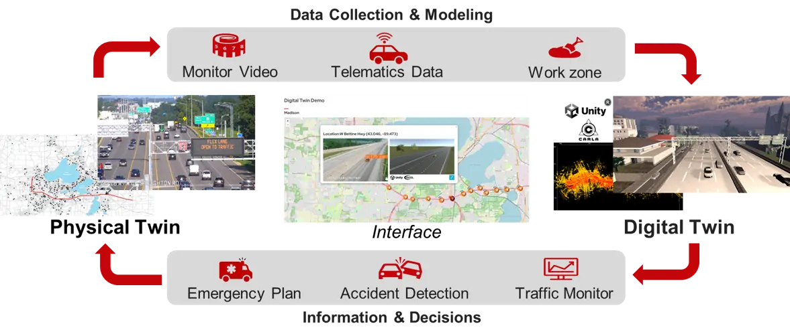

P7
AI-Enabled Digital Twin Framework for Safe and Sustainable Intelligent Transportation
Sustainability, 2025
Paper
This research evaluates autonomous driving systems through complementary real-vehicle experiments and transportation digital twins. We develop controlled and repeatable testing environments to assess safety, reliability, and performance before wider deployment.
Sustainability, 2025
Paper
Transportation Research Part A, 2025
Paper